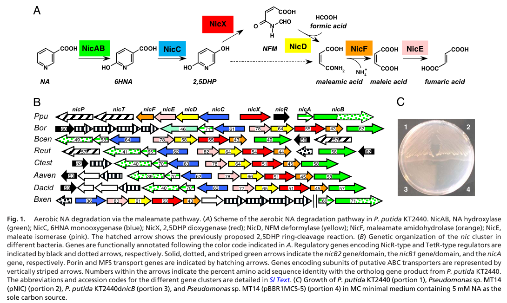

NicD is an alpha/beta-hydrolase-fold N-formylmaleamate deformylase in the aerobic nicotinate degradation pathway of Pseudomonas putida KT2440. It hydrolyzes the ring-cleavage product of NicX to maleamate and formate, supplying substrate to the maleamate amidase NicF. Mutagenesis supports Ser101, Asp125 and His245 as essential catalytic residues.
Definition: Catalysis of the reaction N-formylmaleamate + H2O = maleamate + formate + H(+).
Justification: The substrate-specific reaction is experimentally established, whereas the existing GO parent groups many unrelated linear-amide hydrolases. QuickGO exact-substrate searches did not recover a matching molecular function.
Parent term: hydrolase activity, acting on carbon-nitrogen (but not peptide) bonds, in linear amides
Supporting Evidence:
| GO Term | Evidence | Action | Reason |
|---|---|---|---|
|
GO:0016020
membrane
|
IEA
GO_REF:0000118 |
MARK AS OVER ANNOTATED |
Summary: Membrane location is a family-level TreeGrafter propagation without target support.
Reason: This IEA is a TreeGrafter transfer from the broad PTHR43798 alpha/beta-hydrolase family, whose name and experimental members are dominated by monoacylglycerol-lipase-like enzymes that act at lipid interfaces. Nothing specific to NicD supports a membrane location. The record carries no transmembrane or signal-peptide feature and no curated subcellular location. Activity was recovered from soluble crude extracts (PMID:18678916), and the substrate and product are small soluble intracellular catabolites. Peripheral association cannot be strictly excluded without fractionation, so the row is marked as an over-annotation rather than removed. No replacement cytosol term is proposed because no localization experiment exists.
Supporting Evidence:
file:PSEPK/nicD/nicD-deep-research-falcon.md
NicD was assayed in **soluble crude extracts** after heterologous expression; no membrane segment, signal peptide, or export evidence is reported in the cited sources.
|
|
GO:1901848
nicotinate catabolic process
|
IDA
PMID:18678916 Deciphering the genetic determinants for aerobic nicotinic a... |
ACCEPT |
Summary: nicD directly performs a lower-pathway chemical step in nicotinate catabolism.
Reason: Recombinant NicD-dependent conversion of N-formylmaleamate to maleamate/formate and nicD disruption/complementation place this catalyst in the native KT2440 pathway. The primary full text was inspected externally; the local cache is abstract-only.
Supporting Evidence:
file:PSEPK/nicD/nicD-uniprot.txt
Reaction=N-formylmaleamate + H2O = maleamate + formate + H(+);
PMID:18678916
Further conversion of N-formylmaleamic
acid to formic and maleamic acid is catalyzed by the NicD protein
|
|
GO:0016811
hydrolase activity, acting on carbon-nitrogen (but not peptide) bonds, in linear amides
|
IDA
PMID:18678916 Deciphering the genetic determinants for aerobic nicotinic a... |
MODIFY |
Summary: Refine the broad linear-amide hydrolase activity to the characterized substrate-specific reaction.
Reason: The linear-amide hydrolase parent is correct but less specific than the demonstrated N-formylmaleamate deformylase activity. No exact current GO term was recovered; the replacement corresponds to the supported proposed term. The full paper supports S101/D125/H245 by loss-of-activity substitutions; E221A retains approximately 70% activity, so the current predicted E221 active-site feature is not used to override experiment.
Proposed replacements:
N-formylmaleamate deformylase activity
Supporting Evidence:
file:PSEPK/nicD/nicD-uniprot.txt
Reaction=N-formylmaleamate + H2O = maleamate + formate + H(+);
PMID:18678916
Further conversion of N-formylmaleamic
acid to formic and maleamic acid is catalyzed by the NicD protein
|
Q: Can an exact GO molecular-function term be added for N-formylmaleamate deformylase activity?
Experiment: Determine cellular localization by fractionation with soluble and membrane markers, rather than inferring it from whole-cell extract activity.
Type: subcellular fractionation
The research report should be a detailed narrative explaining the function, biological processes, and localization of the gene product. Citations should be given for all claims.
You should prioritize authoritative reviews and primary scientific literature when conducting research. You can supplement
this with annotations you find in gene/protein databases, but these can be outdated or inaccurate.
We are specifically interested in the primary function of the gene - for enzymes, what reaction is catalyzed, and what is the substrate specificity? For transporters, what is the substrate? For structural proteins or adapters, what is the broader structural role? For signaling molecules, what is the role in the pathway.
We are interested in where in or outside the cell the gene product carries out its function.
We are also interested in the signaling or biochemical pathways in which the gene functions. We are less interested in broad pleiotropic effects, except where these elucidate the precise role.
Include evidence where possible. We are interested in both experimental evidence as well as inference from structure, evolution, or bioinformatic analysis. Precise studies should be prioritized over high-throughput, where available.
The literature evidence used here explicitly matches the UniProt target: NicD from Pseudomonas putida KT2440 (ordered locus PP_3943) encoding N-formylmaleamate deformylase (also called “nicotinate degradation protein D”), which functions in aerobic nicotinic acid (nicotinate; NA) degradation via the maleamate pathway. This directly aligns with the biochemical and genetic characterization of the KT2440 nic gene cluster. (jimenez2008decipheringthegenetic pages 1-2, jimenez2008decipheringthegenetic pages 5-6)
In P. putida KT2440, aerobic NA catabolism proceeds through a sequence of oxidative and hydrolytic transformations that funnel NA carbon into central metabolism as fumarate (TCA cycle intermediate). The canonical intermediate sequence is NA → 6-hydroxynicotinic acid (6HNA) → 2,5-dihydroxypyridine (2,5DHP) → N-formylmaleamic acid (NFM) → maleamic acid → maleic acid → fumaric acid. (jimenez2008decipheringthegenetic media 4de9e495)
A key conceptual point established experimentally in KT2440 is that the extradiol dioxygenase NicX produces NFM as the true ring-cleavage product of 2,5DHP; earlier reports suggesting that dioxygenase directly formed maleamate/formate were explained by contaminating deformylase activity, now attributed to NicD. (jimenez2008decipheringthegenetic pages 4-5)
NicD is the enzyme catalyzing deformylation (hydrolytic removal of an N-formyl group) from N-formylmaleamic acid (NFM), yielding maleamic acid + formic acid. This step is essential for completing the maleamate pathway and enabling subsequent hydrolysis/isomerization steps that produce fumarate. (jimenez2008decipheringthegenetic pages 5-6, jimenez2008decipheringthegenetic media 4de9e495)
NicD is assigned to the α/β-hydrolase-fold superfamily. A notable concept from the KT2440 study is that deformylase activity (on NFM) was described as previously unreported within this broad fold family, expanding the known functional repertoire of α/β-hydrolases. (jimenez2008decipheringthegenetic pages 4-5, jimenez2008decipheringthegenetic pages 5-6)
Reaction catalyzed (validated experimentally):
- N-formylmaleamic acid (NFM) + H2O → maleamic acid + formic acid
In KT2440 NicD, this activity was shown by overexpressing nicD in E. coli and demonstrating conversion of NFM to maleamic and formic acids, verified by HPLC and \u00b9H NMR. (jimenez2008decipheringthegenetic pages 5-6)
Substrate specificity: within the retrieved KT2440 primary evidence, NicD is established on-pathway for NFM (produced by NicX). The corpus retrieved here does not provide a systematic substrate scope beyond NFM for KT2440 NicD; thus, substrate specificity is best stated conservatively as “NFM deformylation” based on direct biochemical evidence. (jimenez2008decipheringthegenetic pages 5-6, jimenez2008decipheringthegenetic pages 4-5)
KT2440 NicD contains a conserved α/β-hydrolase nucleophile motif 98-GHSMG-104, consistent with a serine nucleophile-based mechanism in this fold. (jimenez2008decipheringthegenetic pages 5-6)
Site-directed mutagenesis identified an essential catalytic triad:
- Ser101, Asp125, His245 are required for activity (Ala substitutions eliminated deformylase activity). (jimenez2008decipheringthegenetic pages 5-6)
- Glu221 is not essential (E221A retained ~70% of wild-type activity), supporting the conclusion that Asp125 (not Glu221) acts as the catalytic acid in the triad. (jimenez2008decipheringthegenetic pages 5-6)
NicD is ~29 kDa (predicted 29.1 kDa; observed ~29 kDa band upon overexpression). (jimenez2008decipheringthegenetic pages 5-6)
A NicD assay strategy described in the KT2440 work coupled deformylation-derived formate to formate dehydrogenase (NADH formation), providing an additional functional readout for NicD-catalyzed deformylation. (jimenez2008decipheringthegenetic pages 6-6)
NicD is positioned after NicX ring cleavage and before downstream enzymes that complete funneling to fumarate:
- NicX: 2,5DHP → NFM (ring cleavage) (jimenez2008decipheringthegenetic pages 4-5)
- NicD: NFM → maleamic acid + formic acid (jimenez2008decipheringthegenetic pages 5-6)
- NicF: maleamate/maleamic acid → maleic acid + NH3 (jimenez2008decipheringthegenetic pages 5-6)
- NicE: maleic acid → fumaric acid (jimenez2008decipheringthegenetic pages 5-6)
This pathway organization is summarized visually in Figure 1 from Jiménez et al. (2008). (jimenez2008decipheringthegenetic media 4de9e495)
The KT2440 nic genes are organized in a cluster and are required for NA utilization; disruption of pathway genes including nicD prevents growth on NA as sole carbon source, supporting a necessary role for NicD in aerobic NA catabolism. (jimenez2008decipheringthegenetic pages 1-2, jimenez2008decipheringthegenetic media 4de9e495)
A later KT2440 study (Xiao et al., 2018) analyzed the LysR-type regulator FinR and showed that FinR positively regulates NA-degradation operons, with transcriptomic/RT-qPCR evidence indicating decreased expression of multiple nic genes in a ΔfinR background.
Importantly for nicD specifically:
- nicD corresponds to PP_3943 and appears in the FinR-responsive gene list; the study also states that nicD lies in the nicCDEFTP operon (NA-inducible; promoter Pc). (xiao2018finrregulatesexpression pages 3-4, xiao2018finrregulatesexpression pages 2-3)
In addition, comparative locus analyses note that nic clusters often include a MarR-family regulator NicR and nicotinate transport genes, indicating a broader regulatory/transport module commonly associated with this catabolic capability (not all regulatory interactions are experimentally assigned to nicD directly in the retrieved excerpts). (jimenez2008decipheringthegenetic pages 5-6, brickman2018thebordetellabronchiseptica pages 3-3)
No direct cellular localization experiment (e.g., fluorescence tagging, fractionation in KT2440) was retrieved for NicD. However, functional activity was demonstrated in crude soluble extracts after heterologous overexpression, supporting an inference that NicD is a cytosolic enzyme participating in intracellular catabolism of pathway intermediates. This should be treated as an inference rather than a proven localization claim. (jimenez2008decipheringthegenetic pages 5-6)
Although no 2023–2024 primary mechanistic study specifically re-characterizing P. putida KT2440 NicD was retrieved in this tool run, recent applied microbial studies detect and track the nicotinate degradation module, including EC 3.5.1.106 (N-formylmaleamate deformylase), in real-world fermentation ecosystems.
In cigar-leaf fermentation experiments with a Tremella aurantialba-derived fermentation medium, KEGG/pathway analyses indicated that enzymes in the nicotinate degradation pathway, including NicX (EC 1.13.11.9), NicD (EC 3.5.1.106), and NicF (EC 3.5.1.107), followed similar temporal abundance trends during fermentation. This provides recent evidence that the NFM deformylation step is part of the functional gene repertoire engaged in complex microbial communities where nicotine/nicotinate chemistry influences product qualities. (zhang2023effectsofa pages 8-10)
A 2023 systematic review on nicotine and nicotine-derivative biology summarized late steps of bacterial nicotine catabolism and explicitly states that N-formylmaleamate deformylase (Nfo) converts NFM to maleamic acid + formic acid and provides the EC number 3.5.1.106, contextualizing the same chemistry carried out by NicD orthologs (including the KT2440 NicD step in nicotinate degradation). (boiangiu2023insightsintopharmacological pages 11-14)
A review on hybrid nicotine catabolism described the analogous enzyme Nfo (~28.1 kDa) and reported that an Nfo (from P. putida S16 context) shows sequence identity to KT2440 NicD (reported as 58.2% identity) and provided kinetic parameters for that ortholog (specific activity 1.1 U/mg, apparent Km 0.94 mM for NFM at pH 6.7, 20°C). These values should be interpreted as ortholog evidence (not KT2440 NicD measurements). (huang2020physiologyofa pages 6-7)
The KT2440 nic system includes an NA hydroxylase step that was explicitly noted as industrially relevant for producing 6-hydroxynicotinic acid (6HNA), described as a precursor for insecticides/herbicides. While this point is upstream of NicD, NicD is part of the same catabolic module enabling complete NA assimilation rather than partial biotransformation. (jimenez2008decipheringthegenetic pages 3-4)
In tobacco/cigar fermentation systems, enzymes of nicotinate degradation (including EC 3.5.1.106) were detected and tracked via functional metagenomic annotations, and nicotine/nicotinate-related metabolites were linked to sensory attributes via multivariate analysis and correlations, supporting an emerging “microbiome-enabled” approach to controlling alkaloid chemistry in food/agricultural processing. (zhang2023effectsofa pages 8-10, zhang2023effectsofa pages 12-14)
1) Mechanistic novelty within a known fold: The KT2440 study interprets NicD as an α/β-hydrolase-fold enzyme performing a deformylation reaction that was not previously recognized in that superfamily, which is a strong indication that fold-based annotation alone may miss specialized chemistry in catabolic islands. (jimenez2008decipheringthegenetic pages 4-5, jimenez2008decipheringthegenetic pages 5-6)
2) Clarifying pathway biochemistry through careful product identification: The demonstration that NicX produces NFM and that the deformylation step is catalyzed by NicD (rather than being intrinsic to NicX) resolves a historical ambiguity in pyridine-ring cleavage chemistry and highlights the importance of purity controls in enzyme assignment. (jimenez2008decipheringthegenetic pages 4-5)
3) Regulatory integration: FinR-dependent transcriptional control of NA-degradation operons suggests that NA catabolism is integrated into broader oxidative-stress or metabolic regulatory networks in proteobacteria, though the direct mechanistic coupling of FinR to NicD expression/function remains largely operon- and transcript-level in the retrieved evidence. (xiao2018finrregulatesexpression pages 3-4, xiao2018finrregulatesexpression pages 2-3)
KT2440 NicD mechanistic data (primary):
- Mutagenesis: E221A ~70% activity, while S101A/D125A/H245A abolish activity, supporting the S101–D125–H245 catalytic triad. (jimenez2008decipheringthegenetic pages 5-6)
Ortholog kinetic data (reviewed; not KT2440 direct):
- For Nfo (ortholog context), specific activity 1.1 U/mg and Km 0.94 mM for NFM (pH 6.7, 20°C). (huang2020physiologyofa pages 6-7)
Regulatory transcriptomics (KT2440, ΔfinR):
- nicD (PP_3943) included among genes reduced in the finR mutant; the excerpt provides a log2 fold-change-like value (2.694) and a highly significant p-value (as formatted in the excerpt) supporting FinR-dependent expression differences (interpretation depends on the table’s sign convention; the evidence supports differential expression associated with FinR). (xiao2018finrregulatesexpression pages 2-3)
Applied 2023 fermentation functional profiling:
- Nicotinate pathway enzymes including EC 3.5.1.106 (NicD) tracked with temporal trends; correlation/network statistics include modularity index 0.452 for microbe–VFC associations and numerous significant Spearman correlations (p < 0.05) connecting taxa with nicotine/nicotinate-related products and sensory variables. (zhang2023effectsofa pages 8-10)
| Feature | Finding | Evidence (paper) |
|---|---|---|
| Verified identity | nicD / PP_3943 / UniProt Q88FY3 in Pseudomonas putida KT2440 encodes N-formylmaleamate deformylase in the nicotinic acid (maleamate) pathway; overexpressed protein is ~29 kDa (predicted 29.1 kDa) and belongs to the α/β-hydrolase (AB-hydrolase) fold superfamily. | (jimenez2008decipheringthegenetic pages 5-6, jimenez2008decipheringthegenetic pages 1-2) |
| Enzymatic reaction | NicD catalyzes N-formylmaleamic acid (NFM) → maleamic acid + formic acid; this corresponds to EC 3.5.1.106 (N-formylmaleamate deformylase) and removes the N-formyl group generated after pyridine-ring cleavage. | (jimenez2008decipheringthegenetic pages 4-5, jimenez2008decipheringthegenetic pages 5-6, jimenez2008decipheringthegenetic pages 1-2) |
| Pathway position | NicD acts downstream of NicX and upstream of NicF in aerobic nicotinic acid degradation: NA —NicAB→ 6HNA —NicC→ 2,5DHP —NicX→ NFM —NicD→ maleamic acid —NicF→ maleic acid —NicE→ fumaric acid. | (jimenez2008decipheringthegenetic pages 4-5, jimenez2008decipheringthegenetic pages 5-6, jimenez2008decipheringthegenetic pages 1-2, jimenez2008decipheringthegenetic media 4de9e495) |
| Key catalytic motif | NicD contains the conserved nucleophile motif 98-GHSMG-104, matching the canonical serine-containing motif of α/β-hydrolases. | (jimenez2008decipheringthegenetic pages 5-6) |
| Catalytic triad | Site-directed mutagenesis supports S101–D125–H245 as the catalytic triad; S101A, D125A, H245A abolished activity, whereas E221A retained ~70% of wild-type activity, arguing E221 is not the catalytic acid. | (jimenez2008decipheringthegenetic pages 5-6) |
| Structural/mechanistic interpretation | Homology modeling based on an Aureobacterium lactamase placed NicD in the α/β-hydrolase fold and showed that deformylase activity is an unusual function within this fold family. | (jimenez2008decipheringthegenetic pages 5-6, jimenez2008decipheringthegenetic pages 4-5) |
| Experimental evidence: biochemical function | Overexpression in E. coli produced a strong ~29-kDa band, and crude extracts transformed NFM to maleamic acid + formic acid, verified by HPLC and ¹H NMR. | (jimenez2008decipheringthegenetic pages 5-6) |
| Experimental evidence: pathway assignment | The upstream product NFM was identified as the true product of NicX by NMR/mass spectrometry, resolving earlier confusion and directly establishing the substrate for NicD. | (jimenez2008decipheringthegenetic pages 4-5) |
| Experimental evidence: genetics/phenotype | Disruption of nicD prevented growth on nicotinic acid as sole carbon source, supporting an essential pathway role in KT2440; the nic cluster as a cassette restored NA utilization in nondegrading backgrounds. | (jimenez2008decipheringthegenetic pages 1-2, jimenez2008decipheringthegenetic pages 2-3, jimenez2008decipheringthegenetic media 4de9e495) |
| Regulation notes | nicD resides in the nic cluster, which is associated with NicR (MarR-type regulator) in KT2440 and related loci. Later work showed FinR positively affects expression of the nicC and nicX operons and NA/6HNA utilization; direct regulation of nicD specifically was not shown in the cited excerpts, so influence on NicD is best treated as pathway-level/indirect. | (brickman2018thebordetellabronchiseptica pages 3-3, jimenez2008decipheringthegenetic pages 5-6) |
| Localization | Best current annotation is cytosolic: NicD was assayed in soluble crude extracts after heterologous expression; no membrane segment, signal peptide, or export evidence is reported in the cited sources. This is therefore a subcellular inference, not a direct localization experiment. | (jimenez2008decipheringthegenetic pages 5-6) |
| Current limitations | The available primary sources establish function, pathway context, and catalytic residues, but do not provide NicD-specific high-resolution structure, detailed substrate range beyond NFM, or published NicD kinetic constants in the cited excerpts. | (jimenez2008decipheringthegenetic pages 4-5, jimenez2008decipheringthegenetic pages 5-6, jimenez2008decipheringthegenetic pages 6-6) |
Table: This table summarizes the verified identity, enzymatic role, pathway context, catalytic residues, evidence base, regulation, and inferred localization of Pseudomonas putida KT2440 NicD (Q88FY3/PP_3943). It is useful as a concise, citation-backed functional annotation for the target gene.
References
(jimenez2008decipheringthegenetic pages 1-2): José I. Jiménez, Ángeles Canales, Jesús Jiménez-Barbero, Krzysztof Ginalski, Leszek Rychlewski, José L. García, and Eduardo Díaz. Deciphering the genetic determinants for aerobic nicotinic acid degradation: the nic cluster from pseudomonas putida kt2440. Proceedings of the National Academy of Sciences, 105:11329-11334, Aug 2008. URL: https://doi.org/10.1073/pnas.0802273105, doi:10.1073/pnas.0802273105. This article has 173 citations and is from a highest quality peer-reviewed journal.
(jimenez2008decipheringthegenetic pages 5-6): José I. Jiménez, Ángeles Canales, Jesús Jiménez-Barbero, Krzysztof Ginalski, Leszek Rychlewski, José L. García, and Eduardo Díaz. Deciphering the genetic determinants for aerobic nicotinic acid degradation: the nic cluster from pseudomonas putida kt2440. Proceedings of the National Academy of Sciences, 105:11329-11334, Aug 2008. URL: https://doi.org/10.1073/pnas.0802273105, doi:10.1073/pnas.0802273105. This article has 173 citations and is from a highest quality peer-reviewed journal.
(jimenez2008decipheringthegenetic media 4de9e495): José I. Jiménez, Ángeles Canales, Jesús Jiménez-Barbero, Krzysztof Ginalski, Leszek Rychlewski, José L. García, and Eduardo Díaz. Deciphering the genetic determinants for aerobic nicotinic acid degradation: the nic cluster from pseudomonas putida kt2440. Proceedings of the National Academy of Sciences, 105:11329-11334, Aug 2008. URL: https://doi.org/10.1073/pnas.0802273105, doi:10.1073/pnas.0802273105. This article has 173 citations and is from a highest quality peer-reviewed journal.
(jimenez2008decipheringthegenetic pages 4-5): José I. Jiménez, Ángeles Canales, Jesús Jiménez-Barbero, Krzysztof Ginalski, Leszek Rychlewski, José L. García, and Eduardo Díaz. Deciphering the genetic determinants for aerobic nicotinic acid degradation: the nic cluster from pseudomonas putida kt2440. Proceedings of the National Academy of Sciences, 105:11329-11334, Aug 2008. URL: https://doi.org/10.1073/pnas.0802273105, doi:10.1073/pnas.0802273105. This article has 173 citations and is from a highest quality peer-reviewed journal.
(jimenez2008decipheringthegenetic pages 6-6): José I. Jiménez, Ángeles Canales, Jesús Jiménez-Barbero, Krzysztof Ginalski, Leszek Rychlewski, José L. García, and Eduardo Díaz. Deciphering the genetic determinants for aerobic nicotinic acid degradation: the nic cluster from pseudomonas putida kt2440. Proceedings of the National Academy of Sciences, 105:11329-11334, Aug 2008. URL: https://doi.org/10.1073/pnas.0802273105, doi:10.1073/pnas.0802273105. This article has 173 citations and is from a highest quality peer-reviewed journal.
(xiao2018finrregulatesexpression pages 3-4): Yujie Xiao, Wenjing Zhu, Huizhong Liu, Hailing Nie, Wenli Chen, and Qiaoyun Huang. Finr regulates expression of nicc and nicx operons, involved in nicotinic acid degradation in pseudomonas putida kt2440. Applied and Environmental Microbiology, Oct 2018. URL: https://doi.org/10.1128/aem.01210-18, doi:10.1128/aem.01210-18. This article has 10 citations and is from a peer-reviewed journal.
(xiao2018finrregulatesexpression pages 2-3): Yujie Xiao, Wenjing Zhu, Huizhong Liu, Hailing Nie, Wenli Chen, and Qiaoyun Huang. Finr regulates expression of nicc and nicx operons, involved in nicotinic acid degradation in pseudomonas putida kt2440. Applied and Environmental Microbiology, Oct 2018. URL: https://doi.org/10.1128/aem.01210-18, doi:10.1128/aem.01210-18. This article has 10 citations and is from a peer-reviewed journal.
(brickman2018thebordetellabronchiseptica pages 3-3): Timothy J. Brickman and Sandra K. Armstrong. The bordetella bronchiseptica nic locus encodes a nicotinic acid degradation pathway and the 6‐hydroxynicotinate‐responsive regulator bpsr. Molecular Microbiology, 108:397-409, May 2018. URL: https://doi.org/10.1111/mmi.13943, doi:10.1111/mmi.13943. This article has 13 citations and is from a domain leading peer-reviewed journal.
(zhang2023effectsofa pages 8-10): Qianying Zhang, Shuanghong Yang, Zhenggang Yang, Tianfei Zheng, Pinhe Li, Quanwei Zhou, W. Cai, Yue Wang, Juan Zhang, Xiaoying Ji, and Dongliang Li. Effects of a novel microbial fermentation medium produced by tremella aurantialba sct-f3 on cigar filler leaf. Frontiers in Microbiology, Sep 2023. URL: https://doi.org/10.3389/fmicb.2023.1267916, doi:10.3389/fmicb.2023.1267916. This article has 22 citations and is from a peer-reviewed journal.
(boiangiu2023insightsintopharmacological pages 11-14): Razvan Stefan Boiangiu, Ion Brinza, Iasmina Honceriu, Marius Mihasan, and Lucian Hritcu. Insights into pharmacological activities of nicotine and 6-hydroxy-l-nicotine, a bacterial nicotine derivative: a systematic review. Biomolecules, 14:23, Dec 2023. URL: https://doi.org/10.3390/biom14010023, doi:10.3390/biom14010023. This article has 8 citations.
(huang2020physiologyofa pages 6-7): Haiyan Huang, Jinmeng Shang, and Shuning Wang. Physiology of a hybrid pathway for nicotine catabolism in bacteria. Frontiers in Microbiology, Nov 2020. URL: https://doi.org/10.3389/fmicb.2020.598207, doi:10.3389/fmicb.2020.598207. This article has 18 citations and is from a peer-reviewed journal.
(jimenez2008decipheringthegenetic pages 3-4): José I. Jiménez, Ángeles Canales, Jesús Jiménez-Barbero, Krzysztof Ginalski, Leszek Rychlewski, José L. García, and Eduardo Díaz. Deciphering the genetic determinants for aerobic nicotinic acid degradation: the nic cluster from pseudomonas putida kt2440. Proceedings of the National Academy of Sciences, 105:11329-11334, Aug 2008. URL: https://doi.org/10.1073/pnas.0802273105, doi:10.1073/pnas.0802273105. This article has 173 citations and is from a highest quality peer-reviewed journal.
(zhang2023effectsofa pages 12-14): Qianying Zhang, Shuanghong Yang, Zhenggang Yang, Tianfei Zheng, Pinhe Li, Quanwei Zhou, W. Cai, Yue Wang, Juan Zhang, Xiaoying Ji, and Dongliang Li. Effects of a novel microbial fermentation medium produced by tremella aurantialba sct-f3 on cigar filler leaf. Frontiers in Microbiology, Sep 2023. URL: https://doi.org/10.3389/fmicb.2023.1267916, doi:10.3389/fmicb.2023.1267916. This article has 22 citations and is from a peer-reviewed journal.
(jimenez2008decipheringthegenetic pages 2-3): José I. Jiménez, Ángeles Canales, Jesús Jiménez-Barbero, Krzysztof Ginalski, Leszek Rychlewski, José L. García, and Eduardo Díaz. Deciphering the genetic determinants for aerobic nicotinic acid degradation: the nic cluster from pseudomonas putida kt2440. Proceedings of the National Academy of Sciences, 105:11329-11334, Aug 2008. URL: https://doi.org/10.1073/pnas.0802273105, doi:10.1073/pnas.0802273105. This article has 173 citations and is from a highest quality peer-reviewed journal.

Reviewed Q88FY3, PP_3943, is the NicD N-formylmaleamate deformylase. Actual UniProt DR:PANTHER PTHR43798:SF33 is HYDROLASE, PUTATIVE (AFU_ORTHOLOGUE AFUA_2G14860)-RELATED; the parent family is MONOACYLGLYCEROL LIPASE. These official names were checked against the PANTHER ontology, but neither supplies exact substrate specificity. Pfam PF00561 and InterPro IPR000073/IPR029058 support the alpha/beta-hydrolase fold. Selection as a pathway enzyme requires the demonstrated deformylase chemistry.
PMID:18678916 shows recombinant NicD crude extracts convert N-formylmaleamate to maleamate and formate, verified by HPLC and proton NMR. This is not a purified-NicD kinetic measurement. The cached abstract explicitly says “Further conversion of N-formylmaleamic acid to formic and maleamic acid is catalyzed by the NicD protein”. The full paper reports individual S101A, D125A and H245A substitutions abolishing activity, while E221A retains approximately 70%. Current UniProt lists E221 as a predicted catalytic residue and phrases several mutation entries as combined substitutions; the primary Results support D125 and describe the substitutions individually. This discrepancy is documented rather than silently copied.
The primary Methods sentence calling the products formate and maleate conflicts with its Results/HPLC-NMR interpretation and pathway diagram: the immediate product is maleamate; NicF subsequently removes the remaining amide nitrogen. The Results and chemically distinct steps govern the review.
The native nicotinate process is accepted: NicD performs a chemical step and the nicD mutant cannot grow on nicotinate, with cluster complementation. The broad linear-amide hydrolase row is MODIFY to the already proposed N-formylmaleamate deformylase activity; the core uses that proposed term. QuickGO searches for formylmaleamate recovered no exact term. The prior membrane REMOVE is changed to UNDECIDED: whole-cell extract activity and an absent membrane annotation do not rule out peripheral association. A cytosolic replacement is not asserted without localization evidence.
Review and annotation-reviewer workflow applied on 2026-10-25. Existing KT2440 Falcon reports were read as literature guides, not regenerated or treated as primary experiments. PMID:18678916 remains abstract-only locally after a supported force refresh; the full Results and Methods were independently read at https://pmc.ncbi.nlm.nih.gov/articles/PMC2516282/. The review quotes the cached abstract or curated experimental UniProt statements where appropriate and does not pretend that a body-specific quotation is present in the cache. PMID:22530095 was fetched with full text. No publication cache was manually edited.
For the new S16 comparator, default Falcon deep research with Perplexity-lite fallback ran concurrently with publication caching; Falcon authentication failed and Perplexity returned HTTP401 insufficient_quota (log /tmp/bacillus-nicotinate-s16-deep.log). No provider-branded research file was fabricated. FEBA retrieval was attempted for all four targets: no local database or remote source was reachable, and no fitness artifact was written. PSEP6 also lacks a configured organism mapping. This is missing data, not a negative fitness phenotype. The GO-CAM index had no matches to Q88FY3, Q88FY4, Q88FY5 or F8G0M3.
The lower order is N-formylmaleamate --NicD/Nfo--> maleamate plus formate --NicF/Ami--> maleate plus ammonium --MaiA/NicE/Iso--> fumarate. PMID:22530095 directly characterized the S16 versions after recombinant expression and purification. Its full text reports: “Attempts to degrade nicotinic acid by resting cells of strain S16 did not result in any degradation after 24 h of incubation”. S16 lacks the KT2440 nicAB entry genes in that study. Thus a shared lower enzyme cannot establish complete nicotinate degradation or justify transferring nicotinate-catabolism annotation to the nicotine-pathway comparator. The nicotine enzymes named NicA/NicA2 are not the KT2440 nicotinate hydroxylase small subunit merely because they share a name. No new nicotine-process annotation was added to the KT2440 genes.
Retained membrane UNDECIDED after reassessing the recorded primary-methods and results evidence. Whole-extract enzymology is not a subcellular-fractionation experiment, and no transmembrane helix is required for peripheral membrane association. The alpha/beta-hydrolase domain quotation was removed from this row because it is not localization evidence. The accepted NicB membrane claim has positive target topology/location support; it does not create a symmetric requirement to reject NicD. Current evidence supports neither a positive localization nor its negation.
Live QuickGO checks on 2026-10-25 found no exact terms using EC 1.17.2.1, EC 3.5.1.106, EC 3.5.1.107 or the corresponding substrate-specific activity names. Nicotinate dehydrogenase GO:0050138 remains the NADP-specific reaction. All 14 direct children of GO:0016725 were inspected: acceptor classes include NAD/NADP, oxygen, disulfide, quinone and iron-sulfur protein, but no generic cytochrome-acceptor child. GO:0047111 is formate-specific and cannot substitute. Thus GO:0016725 remains the supported parent for cytochrome-linked NicAB; search non-retrieval is reported as a current search result, not proof that no future ontology term can exist.
GO:0033966 N-substituted formamide deformylase activity was also checked live: its actual definition specifies N-benzylformamide hydrolysis to benzylamine/formate (RHEA:12096), so the superficially general name is not an exact substitute for N-formylmaleamate deformylase.
id: Q88FY3
gene_symbol: nicD
product_type: PROTEIN
status: COMPLETE
taxon:
id: NCBITaxon:160488
label: Pseudomonas putida KT2440
description: NicD is an alpha/beta-hydrolase-fold N-formylmaleamate deformylase in the aerobic nicotinate
degradation pathway of Pseudomonas putida KT2440. It hydrolyzes the ring-cleavage product of NicX to
maleamate and formate, supplying substrate to the maleamate amidase NicF. Mutagenesis supports Ser101,
Asp125 and His245 as essential catalytic residues.
existing_annotations:
- term:
id: GO:0016020
label: membrane
evidence_type: IEA
original_reference_id: GO_REF:0000118
review:
action: MARK_AS_OVER_ANNOTATED
summary: Membrane location is a family-level TreeGrafter propagation without target support.
reason: This IEA is a TreeGrafter transfer from the broad PTHR43798 alpha/beta-hydrolase family,
whose name and experimental members are dominated by monoacylglycerol-lipase-like enzymes that act
at lipid interfaces. Nothing specific to NicD supports a membrane location. The record carries
no transmembrane or signal-peptide feature and no curated subcellular location. Activity was recovered
from soluble crude extracts (PMID:18678916), and the substrate and product are small soluble
intracellular catabolites. Peripheral association cannot be strictly excluded without fractionation,
so the row is marked as an over-annotation rather than removed. No replacement cytosol term is
proposed because no localization experiment exists.
supported_by:
- reference_id: file:PSEPK/nicD/nicD-deep-research-falcon.md
supporting_text: NicD was assayed in **soluble crude extracts** after heterologous expression; no
membrane segment, signal peptide, or export evidence is reported in the cited sources.
- term:
id: GO:1901848
label: nicotinate catabolic process
evidence_type: IDA
original_reference_id: PMID:18678916
review:
action: ACCEPT
summary: nicD directly performs a lower-pathway chemical step in nicotinate catabolism.
reason: Recombinant NicD-dependent conversion of N-formylmaleamate to maleamate/formate and nicD disruption/complementation
place this catalyst in the native KT2440 pathway. The primary full text was inspected externally;
the local cache is abstract-only.
supported_by:
- reference_id: file:PSEPK/nicD/nicD-uniprot.txt
record_section:
- CC:CATALYTIC ACTIVITY
supporting_text: Reaction=N-formylmaleamate + H2O = maleamate + formate + H(+);
- reference_id: PMID:18678916
supporting_text: "Further conversion of N-formylmaleamic \nacid to formic and maleamic acid is catalyzed\
\ by the NicD protein"
- term:
id: GO:0016811
label: hydrolase activity, acting on carbon-nitrogen (but not peptide) bonds, in linear amides
evidence_type: IDA
original_reference_id: PMID:18678916
review:
action: MODIFY
summary: Refine the broad linear-amide hydrolase activity to the characterized substrate-specific
reaction.
reason: The linear-amide hydrolase parent is correct but less specific than the demonstrated N-formylmaleamate
deformylase activity. No exact current GO term was recovered; the replacement corresponds to the
supported proposed term. The full paper supports S101/D125/H245 by loss-of-activity substitutions;
E221A retains approximately 70% activity, so the current predicted E221 active-site feature is not
used to override experiment.
proposed_replacement_terms:
- id: NTR
label: N-formylmaleamate deformylase activity
supported_by:
- reference_id: file:PSEPK/nicD/nicD-uniprot.txt
record_section:
- CC:CATALYTIC ACTIVITY
supporting_text: Reaction=N-formylmaleamate + H2O = maleamate + formate + H(+);
- reference_id: PMID:18678916
supporting_text: "Further conversion of N-formylmaleamic \nacid to formic and maleamic acid is catalyzed\
\ by the NicD protein"
references:
- id: GO_REF:0000118
title: TreeGrafter-generated GO annotations
findings: []
reference_review:
relevance: MEDIUM
correctness: VERIFIED
review_notes: Annotation-generation provenance, not independent biochemical evidence.
- id: file:PSEPK/nicD/nicD-uniprot.txt
title: UniProtKB reviewed entry for nicD
findings:
- statement: Curated reaction annotation is tied to the original KT2440 primary study.
record_section:
- CC:CATALYTIC ACTIVITY
supporting_text: Reaction=N-formylmaleamate + H2O = maleamate + formate + H(+);
reference_review:
relevance: HIGH
correctness: VERIFIED
review_notes: Curated experiment-linked function/reaction statements inspected; broad family classifications
do not establish exact substrates by themselves.
- id: PMID:18678916
title: 'Deciphering the genetic determinants for aerobic nicotinic acid degradation: the nic cluster
from Pseudomonas putida KT2440.'
findings:
- statement: Recombinant NicD extracts generate maleamate and formate, and mutagenesis supports S101,
D125 and H245; these are per-enzyme results, not just ensemble reconstruction.
supporting_text: "Further conversion of N-formylmaleamic \nacid to formic and maleamic acid is catalyzed\
\ by the NicD protein"
reference_review:
relevance: HIGH
correctness: VERIFIED
review_notes: Cached abstract only after supported force refresh. Full PMC2516282 Results and Methods
independently inspected at https://pmc.ncbi.nlm.nih.gov/articles/PMC2516282/. Body-specific findings
are described without presenting them as cached verbatim quotations.
full_text_unavailable: true
- id: PMID:22530095
title: 'Genomic analysis of Pseudomonas putida: genes in a genome island are crucial for nicotine degradation.'
findings:
- statement: Purified S16 Nfo, Ami and Iso execute the same downstream reactions but do not establish
a complete nicotinate route. S16 resting cells failed to degrade nicotinate in the reported test.
supporting_text: Attempts to degrade nicotinic acid by resting cells of strain S16 did not result
in any degradation after 24 h of incubation
reference_review:
relevance: MEDIUM
correctness: VERIFIED
review_notes: Full cached primary text inspected. S16 results establish shared downstream chemistry
and a tested negative nicotinate-utilization context, not KT2440 target assays.
- id: file:PSEPK/nicD/nicD-deep-research-falcon.md
title: Falcon deep research report for nicD
findings: []
reference_review:
relevance: MEDIUM
correctness: VERIFIED
review_notes: Existing provider-generated report consulted as a literature guide; primary sources
and curated experiment-linked statements govern the decisions. Localization and quantitative or
mechanistic claims were independently checked, not accepted from the report alone.
core_functions:
- description: NicD is an alpha/beta-hydrolase-fold N-formylmaleamate deformylase in the aerobic nicotinate
degradation pathway of Pseudomonas putida KT2440.
proposed_molecular_function: N-formylmaleamate deformylase activity
directly_involved_in:
- id: GO:1901848
label: nicotinate catabolic process
supported_by:
- reference_id: file:PSEPK/nicD/nicD-uniprot.txt
record_section:
- CC:CATALYTIC ACTIVITY
supporting_text: Reaction=N-formylmaleamate + H2O = maleamate + formate + H(+);
- reference_id: PMID:18678916
supporting_text: "Further conversion of N-formylmaleamic \nacid to formic and maleamic acid is catalyzed\
\ by the NicD protein"
proposed_new_terms:
- proposed_name: N-formylmaleamate deformylase activity
proposed_definition: Catalysis of the reaction N-formylmaleamate + H2O = maleamate + formate + H(+).
justification: The substrate-specific reaction is experimentally established, whereas the existing GO
parent groups many unrelated linear-amide hydrolases. QuickGO exact-substrate searches did not recover
a matching molecular function.
proposed_parent:
id: GO:0016811
label: hydrolase activity, acting on carbon-nitrogen (but not peptide) bonds, in linear amides
supported_by:
- reference_id: file:PSEPK/nicD/nicD-uniprot.txt
record_section:
- CC:CATALYTIC ACTIVITY
supporting_text: Reaction=N-formylmaleamate + H2O = maleamate + formate + H(+);
- reference_id: PMID:18678916
supporting_text: "Further conversion of N-formylmaleamic \nacid to formic and maleamic acid is catalyzed\
\ by the NicD protein"
suggested_questions:
- question: Can an exact GO molecular-function term be added for N-formylmaleamate deformylase activity?
suggested_experiments:
- description: Determine cellular localization by fractionation with soluble and membrane markers, rather
than inferring it from whole-cell extract activity.
experiment_type: subcellular fractionation